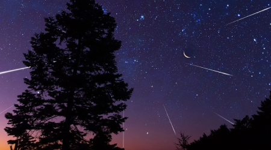

В Поисках Звезд: Открытия и Перспективы Космического Исследования в Эре Новых Возможностей
Вместе с тем, разработки в области радиоастрономии и эксплорации космических волн позволяют ученым проникнуть в более глубокие слои космоса. Это обеспечивает новые данные о черных дырах, туманностях и космических явлениях, которые ранее оставались за гранью нашего понимания. Таким образом, с каждым новым наблюдением мы приближаемся к пониманию самых завораживающих тайн Вселенной.
Погружение в Бескрайние Просторы
Добро пожаловать в увлекательный мир космических открытий и исследований! Сегодня мы погрузимся в захватывающий мир космического исследования, где наука встречается с приключением, а человечество стремится покорить новые горизонты.
Вместе с тем, разработки в области радиоастрономии и эксплорации космических волн позволяют ученым проникнуть в более глубокие слои космоса. Это обеспечивает новые данные о черных дырах, туманностях и космических явлениях, которые ранее оставались за гранью нашего понимания. Таким образом, с каждым новым наблюдением мы приближаемся к пониманию самых завораживающих тайн Вселенной.
Открывая Дверь в Неизведанное
Космическое исследование всегда привлекало внимание людей своей таинственностью и бескрайней неизведанностью. С каждым годом наши знания о Вселенной расширяются, открывая перед нами новые тайны и вызовы. Великие космические агентства и частные компании со всего мира активно вкладывают усилия в разработку технологий и проведение миссий, направленных на дальнейшее понимание космических просторов.
Прошедшие десятилетия были отмечены множеством миссий к внешним планетам нашей Солнечной Системы. Космические аппараты, такие как Juno и Cassini, совершили уникальные полеты, даря нам увлекательные снимки и полезные научные данные. Эти миссии расширяют наше понимание о происхождении планет и их роли в формировании нашей Солнечной системы. С учетом последних успехов в области интерпланетных миссий, мы можем с уверенностью сказать, что открытия ожидают нас в самых глубоких уголках космоса.
Миссии к Краю Солнечной Системы
Недавно запущенные миссии к внешним планетам Солнечной Системы открывают новые горизонты для наших научных исследований. Благодаря использованию передовых космических аппаратов, таких как аппараты солнечного ветра и космические телескопы, мы получаем уникальную возможность рассмотреть тайны Юпитера, Сатурна и других планет изнутри.
Добро пожаловать в увлекательный мир космических открытий и исследований! Сегодня мы погрузимся в захватывающий мир космического исследования, где наука встречается с приключением, а человечество стремится покорить новые горизонты.
Люди на Марсе: Мечта Сбудется?
Космическое исследование всегда привлекало внимание людей своей таинственностью и бескрайней неизведанностью. С каждым годом наши знания о Вселенной расширяются, открывая перед нами новые тайны и вызовы. Великие космические агентства и частные компании со всего мира активно вкладывают усилия в разработку технологий и проведение миссий, направленных на дальнейшее понимание космических просторов.
Прошедшие десятилетия были отмечены множеством миссий к внешним планетам нашей Солнечной Системы. Космические аппараты, такие как Juno и Cassini, совершили уникальные полеты, даря нам увлекательные снимки и полезные научные данные. Эти миссии расширяют наше понимание о происхождении планет и их роли в формировании нашей Солнечной системы. С учетом последних успехов в области интерпланетных миссий, мы можем с уверенностью сказать, что открытия ожидают нас в самых глубоких уголках космоса.
Одним из самых захватывающих событий последних лет стало стремление отправить человека на Марс. Множество миссий, как автоматизированных, так и планируемых для человека, поднимают наши ожидания относительно колонизации Красной планеты. Что ждет нас там, и какие трудности мы будем преодолевать на пути к новому дому в космосе?
Будущее Космического Туризма
Не только научные исследования, но и космический туризм становятся все более реальными. Коммерческие компании, такие как SpaceX и Blue Origin, стремятся предоставить возможность обычным людям почувствовать волнение космоса. Возможно, через несколько лет каждый из нас сможет взглянуть на Землю с орбиты!
Недавно запущенные миссии к внешним планетам Солнечной Системы открывают новые горизонты для наших научных исследований. Благодаря использованию передовых космических аппаратов, таких как аппараты солнечного ветра и космические телескопы, мы получаем уникальную возможность рассмотреть тайны Юпитера, Сатурна и других планет изнутри.
Добро пожаловать в увлекательный мир космических открытий и исследований! Сегодня мы погрузимся в захватывающий мир космического исследования, где наука встречается с приключением, а человечество стремится покорить новые горизонты.